歯磨きが苦手な子には…
飲んでケア
いつもの飲み水に加えるだけ。
毎日の習慣に取り入れる手軽なケアを
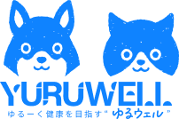
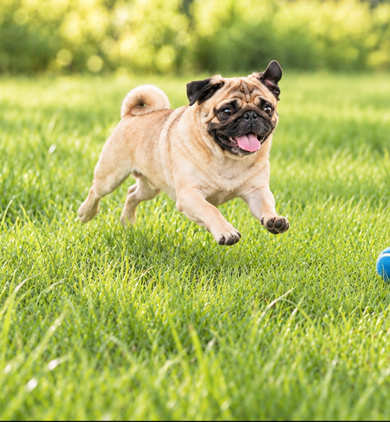
大切な家族の
犬と猫の毎日に寄り添う、
続けやすい口腔ケアを
ご紹介します。
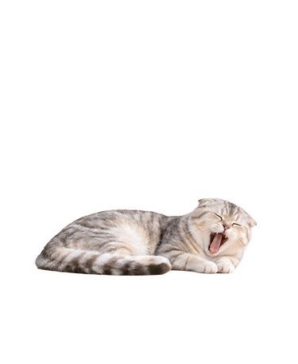
犬や猫も、人と同じように歯垢や歯石がたまり、歯周病になることがあります。 口臭や歯ぐきの腫れ、痛みによる食べにくさなどを防ぐためにも、日頃の口腔ケアが大切です。
3歳までに歯周病を発症すると
言われている割合は…
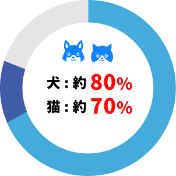
出典：Oklahoma State University Veterinary Medical Teaching Hospital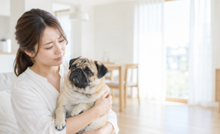
歯周病が進行すると、口臭や歯ぐきの腫れだけではなく、痛みで食べにくくなったり、歯が抜けることがあります。
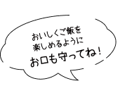
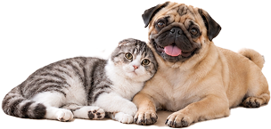
性格や歯みがきへの慣れ方に合わせて、
無理なく続けられる方法から始めましょう
歯磨きが苦手な子には…
いつもの飲み水に加えるだけ。
毎日の習慣に取り入れる手軽なケアを
しっかりケアしたい子には…
ジェルややわらかい歯ブラシを使って、
歯の汚れを直接お手入れします。
毎日のケアを無理なく続けるために
大切な愛犬・愛猫のために生まれた、動物病院取扱製品。有害な食品添加物の不使用など、安全性にこだわりました。
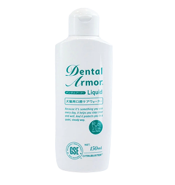
天然由来Dental Armor
デンタルアーマー
液状 犬猫のかんたん口臭ケア
¥3,000税込
詳しい使い方を見る
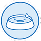
飲み水に混ぜるだけ！ 歯ブラシを嫌がる子におすすめ！
水100〜200ccに1〜2ccを入れる 普段の水と変わらず飲んでくれます
歯ブラシ・歯磨きシートに直接 つけてもご使用いただけます！
一度でしっかり汚れにアプローチ
大切な愛犬・愛猫のために生まれた、動物病院取扱製品。有害な食品添加物の不使用など、安全性にこだわりました。
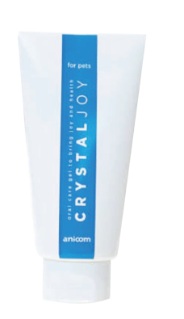
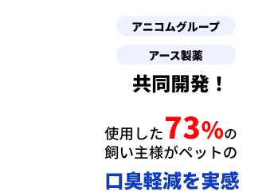
※ブラッシングの作用によるもの※アニコム損保がご契約者向けに募集した「CRYSTAL JOY」無料モニター に対するアンケート結果を元に算出。「CRYSTAL JOY」使用初日と2週間後の口臭軽減に関するアンケート 調査（とても減った・減った・やや減ったと選択した人の合計が約74%（n＝339）【2024年8月23日時点】
CRYSTAL JOY
クリスタルジョイ
ジェル 犬猫の口臭ケア
¥2,000税込
詳しい使い方を見る
毎日朝・夕、歯ブラシ全体にジェルを乗せて歯と歯茎を優しくブラッシングします。
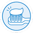
歯みがきに慣れていない子には、シート・おもちゃ・指につけて舐めてもらいます。
1cmのコンパクトヘッドで、
小さなお口や奥歯までらくらくケア。
チカペカ ペット用歯ブラシ
幅11mm / 長さ180mm
ヘッドサイズ7mm×10mm
カラー：パープル・ホワイト
¥800税込
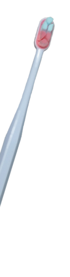
約2cmのワイドヘッドが
歯と歯ぐきをやさしくケア。
チカペカ ペット用歯ブラシ
幅11mm / 長さ193mm
ヘッドサイズ10mm×24mm
カラー：ブルー
¥1,000税込
気になる商品を選んでかんたん注文！
ご希望の商品と数量を、
注文フォームからお選びください。